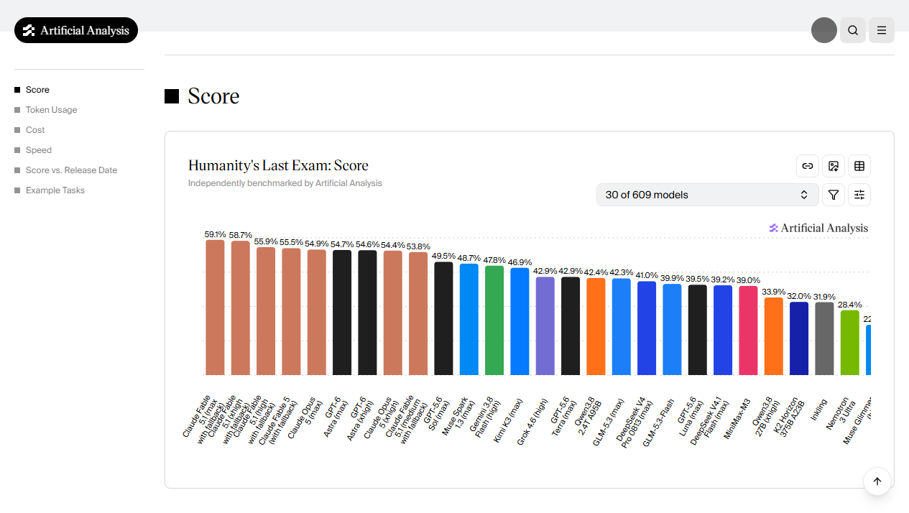
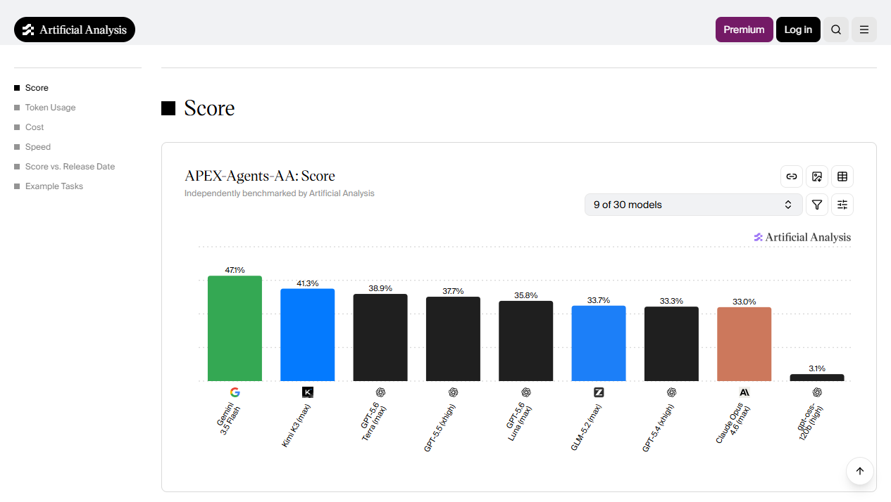
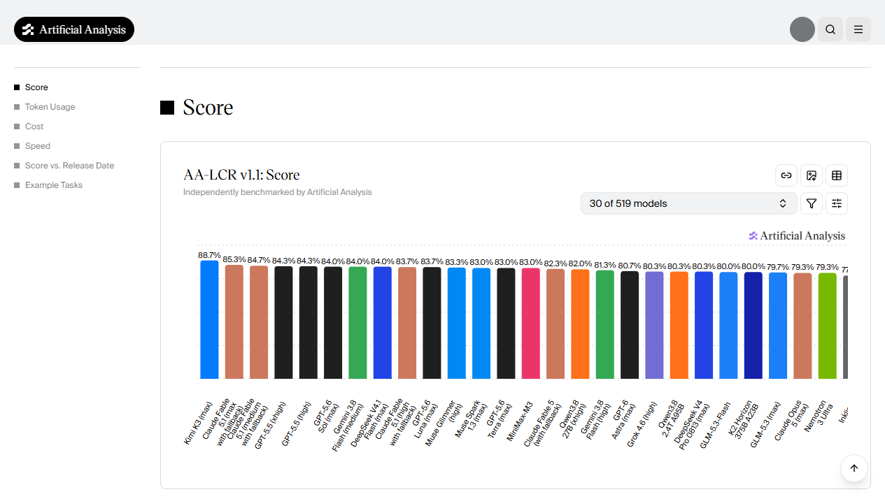
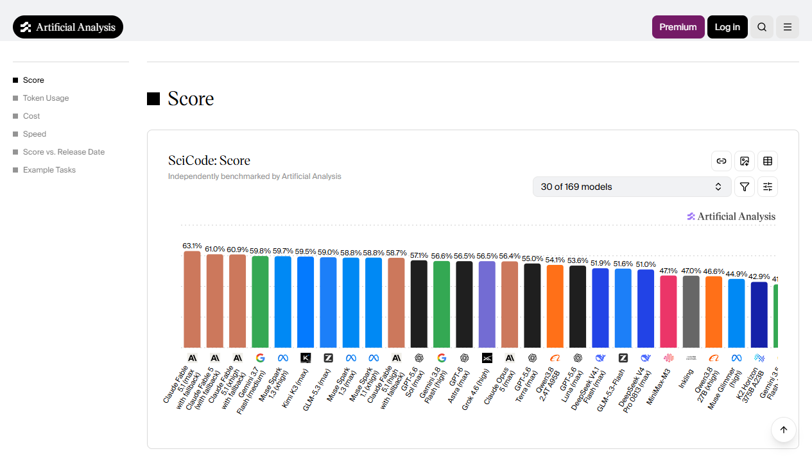
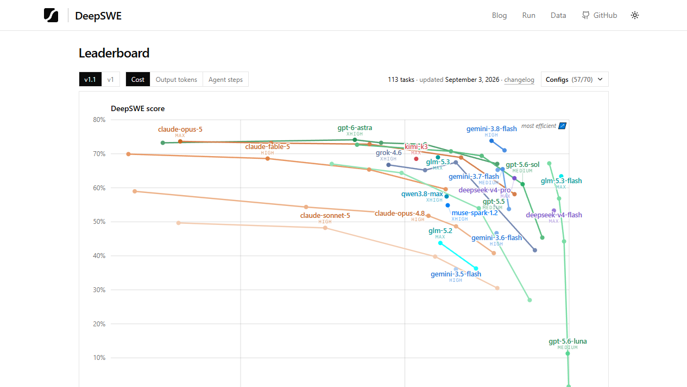
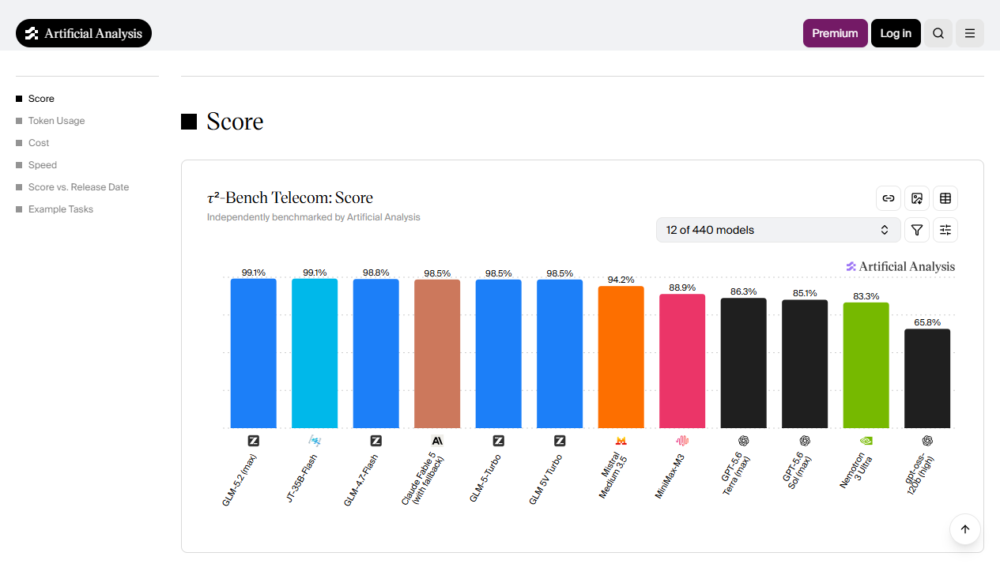
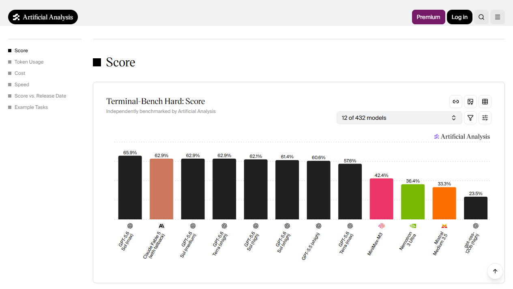
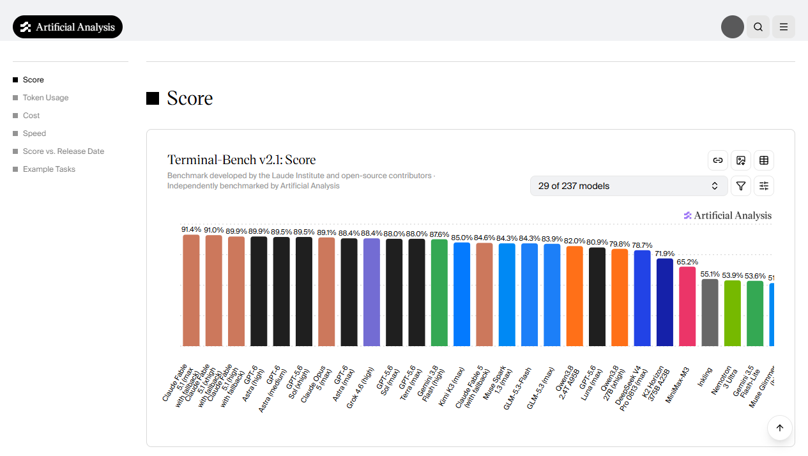

Evidence first.
Exact identities only.
The 2026-09-12 sweep reopened every tracked benchmark and the major provider release channels. Twenty-one score operations on eight screenshot-backed primary sources were accepted; mixed harnesses and unresolved model variants were deliberately deferred.
Run outcome
0 models · 0 benchmarks · 21 scores planned: 17 inserts and 4 replacements. Production started at 656 Convex / 656 D1 / drift 0. Final mirror and deployment verification are recorded below after the single apply.
Post-apply: the guarded production batch completed once with 17 inserts and 4 replacements. Convex and D1 both contain 673 scores with drift 0; the repeated dry-run classified all 21 rows as unchanged.
Accepted changes
| Benchmark | Operations | What changed |
|---|---|---|
| Humanity's Last Exam | 3 insert · 1 replace | Added two Claude Opus 5 effort rows and a new Artificial Analysis-backed Kimi K3 submission; refreshed Muse Spark 1.3. |
| APEX-Agents-AA | 3 insert | Added Terra max, GLM-5.2 max, and gpt-oss-120B high. |
| AA-LCR v1.1 | 2 insert · 1 replace | Added a new Artificial Analysis-backed Kimi K3 submission at 88.7% and Grok 4.6 high; refreshed Muse Spark 1.3. |
| SciCode | 1 insert · 1 replace | Added a new Artificial Analysis-backed Kimi K3 submission at 59.5%; refreshed Muse Spark 1.3 max to 58.8%. |
| DeepSWE v1.1 | 1 insert | Added a new leaderboard-backed Kimi K3 submission at 69.0%; the effective score preserves and aggregates both source submissions. |
| τ²-Bench Telecom | 3 insert | Added current Terra max, Sol max, and gpt-oss-120B high rows. |
| Terminal-Bench Hard | 4 insert | Added exact Sol max/xhigh, Terra max, and gpt-oss-120B high configurations. |
| Terminal-Bench v2.1 | 1 replace | Refreshed Muse Spark 1.3 max from 85.8% to 84.3%. |
Full benchmark sweep
| Benchmark | Decision | Current-source note |
|---|---|---|
| AA Long Context Reasoning | accepted | Three exact-identity score updates. |
| Agents' Last Exam v1 | no change | Current top rows already represented. |
| APEX-Agents-AA | accepted | Three missing exact model rows. |
| ARC-AGI-2 | no change | Current verified frontier rows already represented. |
| ARC-AGI-3 | deferred | Standard and Provider Adapter harnesses remain mixed. |
| DeepSWE v1.1 | accepted | One additional source-bound Kimi K3 submission. |
| EnigmaEval | no change | Published top rows match production. |
| ERQA | no change | No new official leaderboard release. |
| Humanity's Last Exam | accepted | Four exact-identity score updates. |
| IntPhys 2 | no change | Official benchmark publication unchanged. |
| MindCube | no change | Current paper/repository results unchanged. |
| MMMU-Pro | no change | Current frontier rows already represented. |
| SciCode | accepted | Two same-model revisions. |
| SkateBench v2 | no change | Current 28-model leaderboard matches stored rows. |
| SpatialViz-Bench | no change | No new official benchmark release. |
| SWE-Bench Pro | deferred | New rows mix harness/limit regimes; preserve the existing protocol boundary. |
| SWE-bench Verified | no change | No exact protocol-compatible additions accepted. |
| τ²-Bench Telecom | accepted | Three missing exact model rows. |
| Terminal-Bench Hard | accepted | Four missing exact effort rows. |
| Terminal-Bench v2.1 | accepted | One same-model revision. |
| TextQuests | no change | No new official result accepted. |
Discovery and release sweep
The major provider channels were reviewed. No post-2026-09-07 general-purpose release required a new SupraBench model entity. Specialized releases without compatible tracked evidence were not added.
- Terminal-Bench v4.0: credible, but admission needs a redundancy and weighting decision because SupraBench already tracks two Terminal-Bench variants.
- CritPt: promising research-physics signal; defer until reproducibility, contamination, and stable-source review is complete.
- MLCR-AA: promising medical long-context signal; defer until overlap with AA-LCR and domain weighting are resolved.
- ARC-AGI-3: keep blocked until harness identity can be stored explicitly.
Live verification
The deployed report, all eight affected benchmark pages, and all ten affected model pages were opened and visually checked after the fast-forward publication. The pages loaded the expected identities and production-backed values; no stale report response or missing detail page remained.
Screenshot evidence








Generated 2026-09-12 11:26 CEST · target deployment upbeat-clam-790 · manifest schema 1